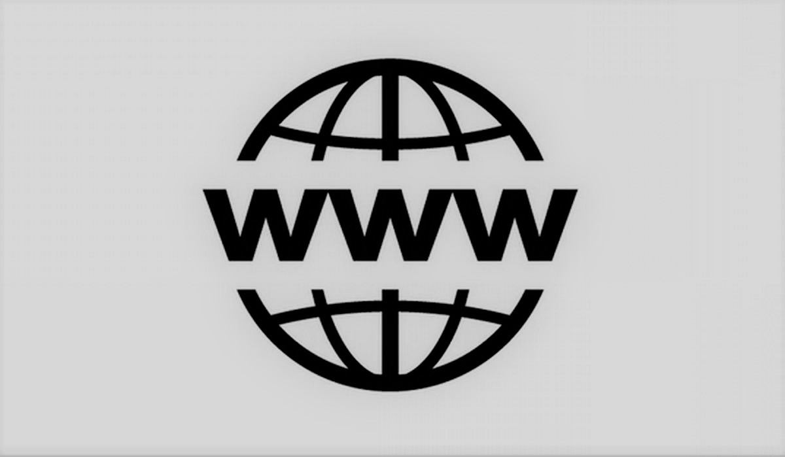

Sejarah Jaringan Komputer
| Nama | : | Ilma Aulia |
| NIM | : | 20833002 |
| Kelas | : | B |
| Dosen Pengampu | : | Aceng Ahmad Rodian Susila, M.Pd. |
Jaringan komputer adalah himpunan interkoneksi antara dua komputer autonomous atau lebih yang terhubung dengan media transmisi kabel atau tanpa kabel (Syafrizal, 2020: 2).
Jaringan komputer adalah sebuah aspek penting dalam kehidupan modern kita. Tanpa jaringan komputer, banyak hal yang tidak mungkin dilakukan, seperti berbagi informasi dan berkomunikasi dengan orang lain dari jarak jauh. Berikut ini merupakan sejarah jaringan komputer dari tahun ke tahun.
1940an — Batch Processing
Pada tahun 1940an, Professor Howard H. Aiken memimpin sebuah proyek pengembangan komputer Model I dan bekerja sama dengan IBM dalam pengembangannya.
Pada mulanya proyek tersebut hanyalah ingin memanfaatkan sebuah perangkat komputer yang harus dipakai bersama. Untuk mengerjakan beberapa proses tanpa banyak membuang waktu kosong, dibuatlah Batch Processing sehingga beberapa program bisa dijalankan dalam sebuah komputer dengan dengan kaidah queue. Batch processing adalah suatu implementasi program yang merupakan sistem pemrosesan data yang memproses data dalam batch atau kelompok besar data secara bersamaan. Dalam bahasa Indonesia, Batch Processing dikenal dengan istilah proses beruntun.
1950an — TSS
Pada tahun 1950an, penggunaan dari sebuah sistem komputer menjadi semakin berkembang. Hal ini ditandai dengan berkembangnya apa yang disebut sebagai super komputer. Adanya penciptaan dan pengembangan dari super komputer ini mempengaruhi tuntutan dari perusahaan, dimana sebuah komputer harus bisa melayani dan juga menjalankan program di beberapa terminal. Untuk itu ditemukan konsep distribusi proses berdasarkan waktu yang dikenal dengan nama Time Sharing System (TSS). Pada saat itu ntuk pertama kalinya terbentuklah jaringan komputer pada layer aplikasi. Pada sistem TSS, beberapa terminal terhubung secara seri ke sebuah host komputer. Dalam proses TSS mulai nampak perpaduan teknologi komputer dan teknologi telekomunikasi yang pada awalnya berkembang sendiri-sendiri.
1969-1990 — ARPANET
ARPANET (Advanced Research Project Agency Network) adalah jaringan komputer yang dibuat oleh ARPA (Advanced Research Project Agency) dari Departemen Pertahanan Amerika Serikat pada tahun 1969.
Pada awalnya, proyek ARPANET menghubungkan hanya 4 situs saja. Empat situs tersebut membangun satu jaringan yang terpadu pada tahun 1969. Dari empat situs yang terhubung yaitu Stanford Research Institute, Santa Barbara, University of California, dan University of Utah. Proyek ARPANET diumumkan pada bulan Oktober tahun 1972 secara resmi. Masa tersebut bisa juga disebut sebagai tahun web dibuat pertama kali.
1970 — Distributed Processing
Penggunaan konsep distributed processing dimulai karena beban pekerjaan bertambah banyak dan harga perangkat komputer yang mulai terasa mahal.
Dalam distributed processing, beberapa host komputer mengerjakan sebuah pekerjaaan besar secara paralel untuk melayani beberapa terminal yang tersambung secara seri pada setiap host komputer. Pada proses ini sudah mutlak diperlukan perpaduan yang mendalam antara teknologi komputer dan telekomunikasi, karena selain proses yang harus didistribusikan, semua host komputer wajib melayani terminal-terminalnya dalam satu perintah dari komputer pusat.
1972 — Email
Pada tahun 1972, Ray Tomlinson berhasil mengembangkan suatu sistem surat elektronik. Ray mengenalkan icon @ sebagai identitas email untuk memisahkan user id dan domain pada sebuah alamat email.
1973 — Internet
Vinton Cerf dan Bob Kahn mulai mengembangkan dan juga mengusulkan sebuah jaringan komputer yang sangat luas dan dapat digunakan oleh seluruh dunia. Ini merupakan awal mula perkembangan internet atau international network.
1982 — TCP/IP
Dengan berkembangnya teknologi komputer, dan juga maraknya penciptaan komputer baru hingga era 80-an, maka saat itu kebutuhan akan jaringan antar komputer menjadi semakin banyak dan diminati. Karena itu, dibuatlah suatu protokol resmi mengeai jaringan internet.
Pada tahun 1982, sebuah protokol dibuat, yang diperi nama TCP (Transmission Control Protocol) atau yang saat ini sering kali kita kenal dengan istilah IP (Internet Protocol). Protokol ini memungkinkan banyak komputer dapat saling terhubung ke dalam sebuah jaringan international yang dapat menghubungkan banyak user di seluruh dunia
1984 — DNS
Dengan berkembangnya teknologi komputer, dan juga maraknya penciptaan komputer baru hingga era 80-an, maka saat itu kebutuhan akan jaringan antar komputer menjadi semakin banyak dan diminati. Karena itu, dibuatlah suatu protokol resmi mengeai jaringan internet. Pada tahun 1982, sebuah protokol dibuat, yang diperi nama TCP (transmission Control Protocol) atau yang saat ini sering kali kita kenal dengan istilah IP alias Internet Protocol. Protokol ini memungkinkan banyak komputer dapat saling terhubung ke dalam sebuah jaringan international yang dapat menghubungkan banyak user di seluruh dunia.
1988 — Internet Relay Chat
Dengan banyakanya perkembangan di dalam dunia jaringan komputer, termasuk di dalamnya adalah LAN, dan juga internet, hal ini juga berkembang pesat sesuai dengan kebutuhan penggunanya. Pada era 1980an, tepatnya 1988, seorang berkebangsaan Finlandia, yaitu Jarkko Oikaren mengembangkan suatu sistem chatting berbasi jaringan komputer secara luas dengan menggunakan internet. Sistem ini dinamakan sebagai internet relay chat (IRC) dimana pada penggunanya sebagai user dapat melakukan chatting dengan menggunakan jaringan internet.
1990 — WWW
Berners Lee dan timnya menciptakan World Wide Web (www). Publik mulai menggunakan “www” yang berfungsi untuk digunakan dalam menelusuri situs website. Penemuan ini didasarkan pada dua pilar, yaitu bahasa pemrograman HTML yang memungkinkan keberadaan website, serta protokol pertukaran hypertext HTTP yang memungkinkan pengguna meminta dan menerima laman yang diinginkan.
Sumber:
Sutiono. (2020). Sejarah Jaringan Komputer Secara Lengkap. Tersedia: https://dosenit.com/jaringan-komputer/sejarah-jaringan-komputer. [10 Februari 2023].
Syafrizal, M. (2020). Pengantar Jaringan Komputer. Yogyakarta: Penerbit Andi.